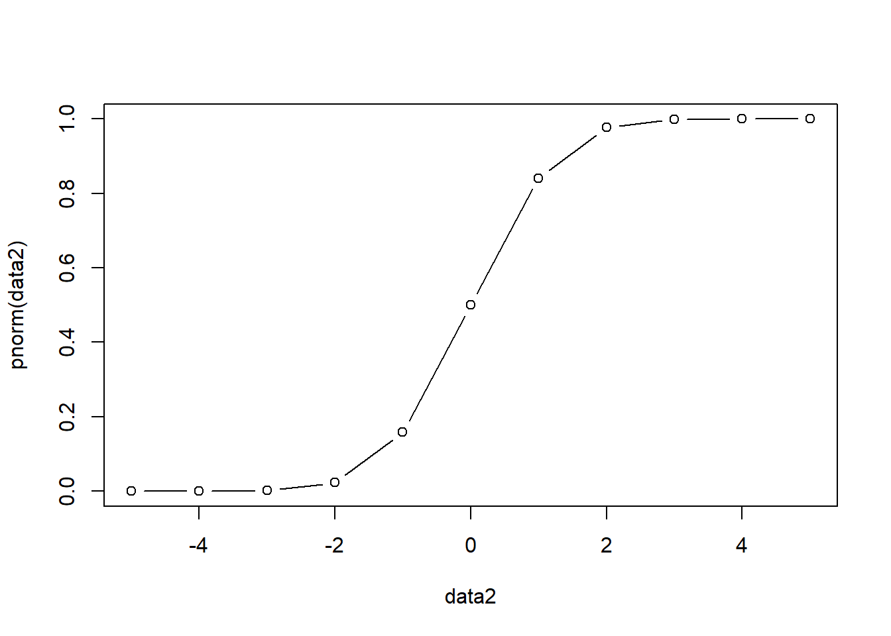

Chapter 1 Basics
1.1 Logit
\[f(x)=log(\frac{p(y=1)}{1-p(y=1)})\] The basic idea of logistic regression: \[p(y=1)=\frac{1}{1+e^{-(\beta_0+\beta_1x_1+...+\beta_nx_n)}}=\frac{e^{\beta_0+\beta_1x_1+...+\beta_nx_n}}{1+e^{\beta_0+\beta_1x_1+...+\beta_nx_n}}\] Thus, \(e^{\beta_0+\beta_1x_1+...+\beta_nx_n}\) can be from \(-\infty\) to \(+\infty\), and \(p(y=1)\) will be always within the range of \((0,1)\).
f<-function(x){exp(x)/(1+exp(x))}
data<-seq(-10,10,1)
plot(data,f(data),type = "b")
We can also write the function into another format as follows: \[log \frac{p(y=1)}{1-p(y=1)}= \beta_0+\beta_1x_1+...+\beta_nx_n\] Thus, we know that the regression coeficients of \(\beta_i\) actually change the “log-odds” of the event. Of course, note that the magnitude of \(\beta_i\) is dependent upon the units of \(x_i\).
The following is an example testing whether that home teams are more likely to win in NFL games. The results show that the odd of winning is the same for both home and away teams.
mydata = read.csv(url('https://raw.githubusercontent.com/nfl-football-ops/Big-Data-Bowl/master/Data/games.csv'))
mydata$result_new<-ifelse(mydata$HomeScore>mydata$VisitorScore,1,0)
summary(mydata$result_new)## Min. 1st Qu. Median Mean 3rd Qu. Max.
## 0.0000 0.0000 0.0000 0.4945 1.0000 1.0000mylogit1 = glm(result_new~1, family=binomial, data=mydata)
summary(mylogit1)##
## Call:
## glm(formula = result_new ~ 1, family = binomial, data = mydata)
##
## Deviance Residuals:
## Min 1Q Median 3Q Max
## -1.168 -1.168 -1.168 1.187 1.187
##
## Coefficients:
## Estimate Std. Error z value Pr(>|z|)
## (Intercept) -0.02198 0.20967 -0.105 0.917
##
## (Dispersion parameter for binomial family taken to be 1)
##
## Null deviance: 126.14 on 90 degrees of freedom
## Residual deviance: 126.14 on 90 degrees of freedom
## AIC: 128.14
##
## Number of Fisher Scoring iterations: 31.2 Probit
As noted above, logit \(f(x)=log(\frac{p(y=1)}{1-p(y=1)})\) provides the resulting range of \((0,1)\). Another way to provide the same rage is through the cdf of normal distribution.The following R code is used to illusrate this process.
data2<-seq(-5,5,1)
plot(data2,pnorm(data2),type = "b") Thus, the cdf of normal distribution can be used to indicate the probability of \(p(y=1)\).
\[\Phi(\beta_0+\beta_1x_1+...+\beta_nx_n )= p(y=1)\]
Similar to logit model, we can also write the inverse function of the cdf to get the function that can be from \(-\infty\) to \(+\infty\).
\[\beta_0+\beta_1x_1+...+\beta_nx_n =\Phi^{-1}(p(y=1))\]
Thus, for example, if \(X\beta\) = -2, based on \(\Phi(\beta_0+\beta_1x_1+...+\beta_nx_n )= p(y=1)\) we can get that the \(p(y=1)=0.023\).
In contrast, if \(X\beta\) = 3, the \(p(y=1)=0.999\).
pnorm(-2)## [1] 0.02275013pnorm(3)## [1] 0.9986501Let’s assume that there is a latent variable called \(Y^*\) such that
\[Y^*=X\beta+\epsilon, \epsilon \sim N(0,\sigma^2)\] You could think of \(Y^*\) as a kind of “proxy” between \(X\beta+\epsilon\) and the observed \(Y (1 or 0)\). Thus, we can get the following. Note that, it does not have to be zero, and can be any constant.
\[ Y^*=\begin{cases} 0 \;\;\: if \; y_i^* \leq 0 \\ 1 \;\;\: if \; y_i^* > 0 \end{cases} \]
Thus,
\[y_i^* > 0 \Rightarrow \beta^{'}X_i + \epsilon_i >0 \Rightarrow \epsilon_i > -\beta^{'}X_i\]
Thus, we can write it as follows. Note that \(\frac{ \epsilon_i}{\sigma} \sim N(0,1)\)
\[p(y=1|x_i)= p(y_i^* >0|x_i)=p(\epsilon_i > -\beta^{'}X_i)= p(\frac{ \epsilon_i}{\sigma}>\frac{-\beta^{'}X_i}{\sigma})=\Phi(\frac{\beta^{'}X_i}{\sigma}) \] We thus can get:
\[p(y=0|x_i)=1-\Phi(\frac{\beta^{'}X_i}{\sigma})\]
For \(p(y=1|x_i)=\Phi(\frac{\beta^{'}X_i}{\sigma})\), we can not really estimate both \(\beta\) and \(\sigma\) as they are in a ratio. We can assume \(\sigma =1\), then \(\epsilon \sim N(0,1)\). We know \(y_i\) and \(x_i\) since we observe them. Thus, we can write it as follows.
\[p(y=1|x_i)=\Phi(\beta^{'}X_i)\]